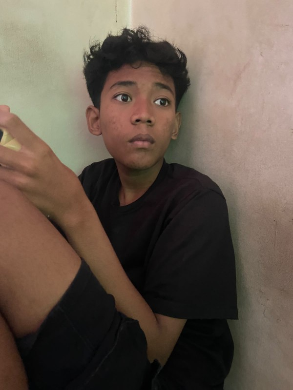
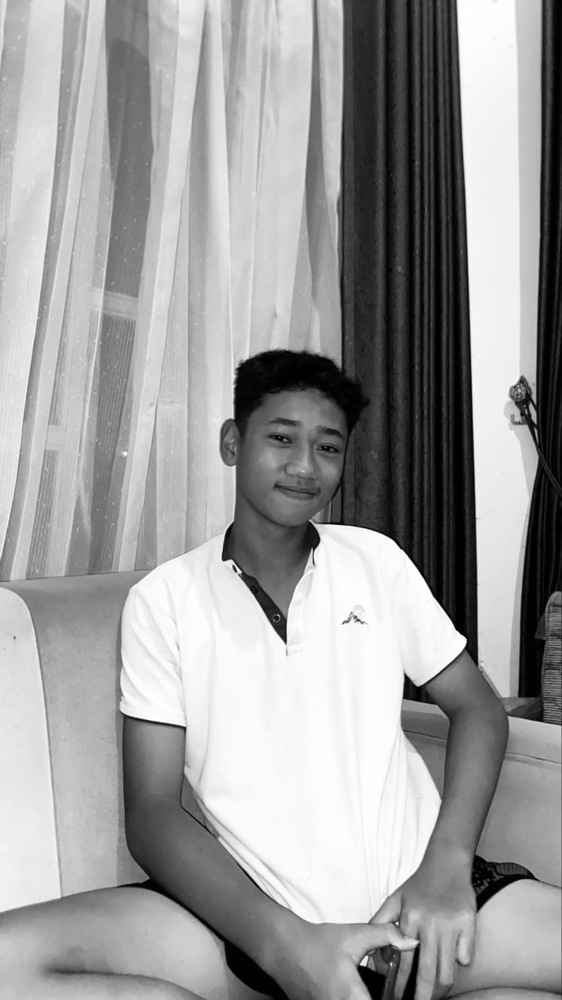

📍 Panggonan
Pulau Merah dumunung ing Desa Sumberagung, Kecamatan Pesanggaran, Kabupaten Banyuwangi, Jawa Timur. Panggonane ana ing sisih kidul Banyuwangi lan kalebu kawasan wisata pesisir sing nduweni panorama segara sing apik.

Laporan asil observasi ngenani kaendahan alam, lokasi, sejarah, kegiatan wisata, lan paedah Pulau Merah ing Kabupaten Banyuwangi.
Ganti jeneng lan foto ing ngisor iki nganggo data anggota kelompokmu.


Pulau Merah minangka salah sawijining papan wisata alam sing misuwur ing Banyuwangi.
Pulau Merah dumunung ing Desa Sumberagung, Kecamatan Pesanggaran, Kabupaten Banyuwangi, Jawa Timur. Panggonane ana ing sisih kidul Banyuwangi lan kalebu kawasan wisata pesisir sing nduweni panorama segara sing apik.
Ciri khas Pulau Merah yaiku ana bukit cilik sing wujude mbunder lan katon cedhak karo garis pantai. Ing sakupenge ana pasir pantai, segara biru, tetuwuhan ijo, lan ombak sing dadi daya tarik kanggo para wisatawan.
Saka asil pengamatan, wilayah Pulau Merah nduweni lingkungan pesisir kanthi pasir sing amba lan pemandangan segara sing mbukak. Bukit cilik ing tengah segara dadi ciri khas sing gampang dikenali. Nalika banyu segara surut, jarak antarane pantai lan bukit kasebut katon luwih cedhak.
Kaendahan alam kasebut ndadekake Pulau Merah cocok kanggo wisata, fotografi, dolanan ing pantai, lan ngaso karo kulawarga. Supaya lingkungan tetep apik, wisatawan kudu njaga karesikan lan ora mbuwang sampah sembarangan.
Pulau Merah uga dikenal minangka salah sawijining papan kanggo olahraga selancar. Ombake cukup narik kawigaten para peselancar. Kajaba selancar, pengunjung bisa mlaku-mlaku ing pinggir pantai, dolanan pasir, njupuk foto, piknik, lan nikmati swasana srengenge surup.
Aktivitas wisata kasebut ora mung menehi hiburan, nanging uga bisa ndhukung kegiatan ekonomi masyarakat ing sekitar kawasan wisata.
Bukit Pulau Merah nduweni bentuk sing unik lan dadi unsur utama sing mbedakake pantai iki saka pantai liyane. Ing kawasan iki uga ana bebatuan sing nduweni nilai kanggo sinau babagan geologi lan proses pembentukan bentang alam pesisir.
Kawasan wisata bisa menehi kesempatan ekonomi tumrap masyarakat, kayata dodolan panganan, suvenir, jasa parkir, penginapan, lan layanan wisata. Mula, pangembangan wisata sing tertib kudu tetep nggatekake kelestarian lingkungan lan kepentingan masyarakat lokal.
Sawetara kegiatan sing bisa ditindakake nalika ana ing kawasan Pulau Merah.
Ombak Pulau Merah dadi salah sawijining daya tarik kanggo para peselancar. Kegiatan iki kudu ditindakake kanthi nggatekake kondisi segara lan aturan keamanan.
Pemandangan bukit, segara, pasir, lan srengenge surup bisa dadi obyek fotografi sing apik.
Pengunjung bisa mlaku ing pasir, dolanan ing pinggir pantai, utawa mung nikmati swasana segara.
Pengunjung bisa tuku panganan lan omben-omben saka pedagang lokal. Kegiatan iki uga bisa ndhukung UMKM masyarakat sekitar.
Wektu sore dadi salah sawijining wektu sing disenengi amarga cahya srengenge surup nggawe swasana pantai katon luwih endah.
Wisatawan kudu nggawa sampah menyang panggonan sing wis disedhiyakake lan ora ngrusak tetuwuhan utawa lingkungan pesisir.
Foto referensi Pulau Merah saka sumber gambar ing internet.
Pulau Merah saka pinggir pantai
 Pantai lan bukit Pulau Merah
Pantai lan bukit Pulau Merah
 Bukit Pulau Merah
Bukit Pulau Merah
Sumber foto: Tripoto, idtempatwisata.com, lan Radar Bojonegoro/Jawa Pos. Yen tugasmu mbutuhake foto bebas lisensi, ganti gambar iki nganggo foto sing duwe izin panggunaan utawa foto dokumentasi kelompokmu dhewe.
Adhedhasar asil observasi, Pulau Merah minangka salah sawijining destinasi wisata alam ing Banyuwangi sing nduweni daya tarik utama berupa bukit cilik, pantai pasir, segara, lan ombak sing cocog kanggo kegiatan selancar. Panggonan iki uga nduweni potensi kanggo fotografi, rekreasi kulawarga, lan kegiatan ekonomi masyarakat.
Miturut kelompok, kaendahan Pulau Merah kudu dijaga kanthi cara njaga karesikan, ora ngrusak lingkungan, lan nggunakake fasilitas wisata kanthi tanggung jawab. Kanthi mangkono, Pulau Merah bisa tetep dadi papan wisata sing nyenengake lan migunani tumrap masyarakat.